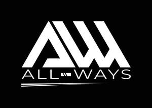

Trade Mark Journal No.2025/051 19 December 2025
UK00004308408 10 December 2025 (6,7,12,17,40,42)

International priority date claimed: 23 October 2025
(European Union Intellectual Property Office (EUIPO))
(019265373)
- Class 6
- Pipes, tubes and hoses, and fittings therefor, including valves, of metal; Sheets of aluminium; Aluminum siding; Aluminium slabs; Aluminium discs; Bars made of titanium; Titanium wires; Titanium unwrought or semi-wrought; Slabs of metal including those from alloy steel and titanium; Pipes of metal including those from alloy steel and titanium; Iron carbon alloys; Carbon steels.
- Class 7
- Aeroplane engines; Jet engines, other than for land vehicles; Turbines, other than for land vehicles; Aeroplane engines; Gear boxes, other than for land vehicles; Engine mounts, other than for land vehicles; Transmission shafts, other than for land vehicles; Propulsion mechanisms, other than for land vehicles; Transmission mechanisms, other than for land vehicles.
- Class 12
- Airplanes and structural parts therefor; Aeroplanes; Wheels for aircraft; Hoods for aircraft; Air vehicles; Wings for aircraft; Aerodynamic wings for airplanes; Space vehicles; Space vehicles; Air and space vehicles; Space vehicles.
- Class 17
- Elastomer polymers; Polymeric membranes; Carbon fibre; Carbon fibres for use in industry; Crude fibres of carbon; Carbon fibres, other than for textile use; Fibreglass for insulation; Fibreglass for insulation; Glass fiber insulation for use in construction; Polyurethane sealants; Waterproof sealants; Fibreglass for insulation; Aramid fibers, not for textile use.
- Class 40
- Polymerization; Refinishing of fibreglass; Metal treating; Treatment of glass materials; Treatment of aluminum; Metallurgical processing; Heat treatment and coating of steel; Metalworking; Metal treating; Metal welding; Treating [stamping] of metal.
- Class 42
- Aircraft design; Engineering drawing; Industrial design; Construction drafting; Vehicle design services; Design planning; Engineering drawing; Engineering design; Technological design services; Technical research projects and studies; Conducting of technical feasibility studies; Design of engineering products; Preparation of technical studies; Mechanical engineering; Testing of machinery; Testing of vehicles; Material testing services; Component testing; Testing of machinery; Engineering consultancy relating to design; Provision of information relating to industrial engineering; Technical engineering; Consultation services relating to physics; Engineering consultancy services; Development of construction projects.
L.M.A. (Lavorazione Meccanica Per Aeronautica) - S.R.L. Siglabile L.M.A. S.R.L.
Representative: Wedlake Bell LLP